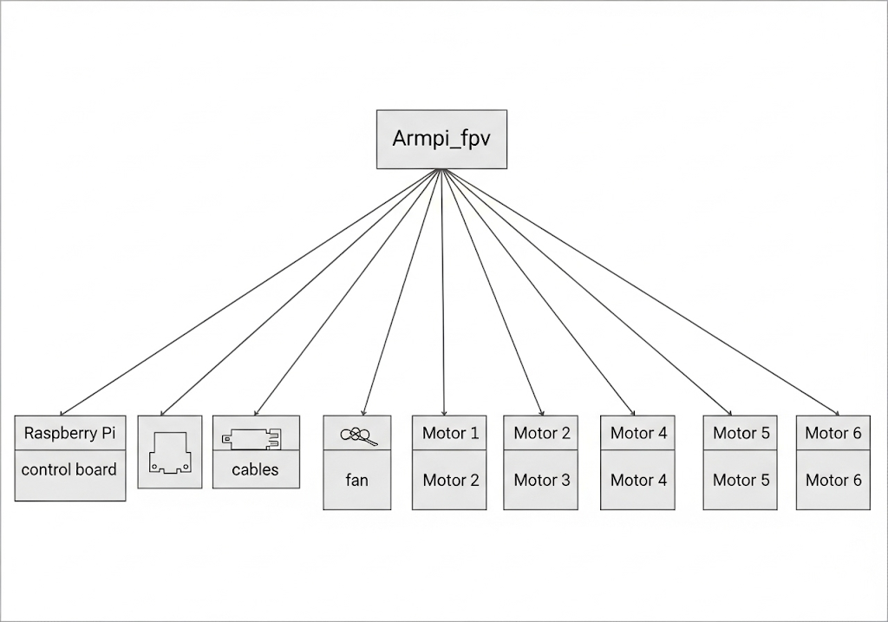

Failure Mode and Effects Analysis (FMEA) Report for Hiwonder Armpi_FPV Servo Motor
1.0 System Description
The Hiwonder Armpi_FPV is a 6-degree-of-freedom (DOF) robotic arm designed for educational use. It is controlled by a Raspberry Pi 4B running ROS 1 Melodic. The servo motors are critical actuators, providing motion for each joint to perform tasks like object manipulation. The system operates in an indoor, dry environment and is constrained by a 500g payload limit.
2.0 Block Diagram of the System

The servo motors, which are the focus of this analysis, are connected to an extended control board that is managed by the Raspberry Pi. This block diagram illustrates the relationship between the motor and the other system components.
System Structure Diagram
3.0 FMEA Ground Rules and Assumptions
- Mission: Educational robotics demonstration and object manipulation.
- Mission Phase: The analysis is limited to the normal operation phase.
- Operating Time: The analysis assumes continuous operation for up to 30 minutes.
- Severity Categories: The analysis uses a custom scale from 1 (Minor) to 4 (Catastrophic).
- Occurrence and Detection Derivation: Based on the provided document and analyst's judgment.
- Source of Analysis: The failure modes, effects, and recommended actions are based exclusively on the provided "DC Servo Motor Failure Modes" document.
- Deviation from MIL-STD-1629: This report is tailored and deviates from the standard by using the provided document as the sole source for failure analysis.
4.0 Failure Mode and Effects Analysis (FMEA) Worksheet
| Item ID | Item Name | Functional Requirement (FR) | Failure Mode | Cause of Failure | Local Effects | End Effects (System-Level) | Severity (S) | Occurrence (O) | Detection (D) | RPN | Recommended Actions | Reference |
|---|---|---|---|---|---|---|---|---|---|---|---|---|
| SRV-001 | Servo Motor | FR3.1: Control the gripper to reach the desired position. | Bearing Wear | Continuous operation or misalignment; lubrication degradation; contaminants. | Increased friction, noise, and heat; bearing can seize. | Sluggish or erratic motion; loss of position accuracy; motor can stall. | 3 | 4 | 1 | 12 | Monitor for noise and heat; regular maintenance to inspect bearings. | a-m-c.com, mroelectric.com |
| SRV-002 | Servo Motor | FR3.1: Control the gripper to reach the desired position. | Brush/Commutator Wear | Normal erosion from use. | Intermittent electrical contact (sparking); higher resistance; carbon dust deposits; reduced torque output. | Inconsistent speed/force; degraded control accuracy. | 2 | 3 | 1 | 6 | Implement a maintenance schedule to check brushes and commutator. | wraycastle.com, mroelectric.com |
| SRV-003 | Servo Motor | FR3.1: Control the gripper to reach the desired position. | Winding Insulation Failure | Age, heat, or contamination. | Hot spots; "burned out" motor. | Sudden loss of torque or complete motor shutdown; loss of DOF. | 4 | 2 | 2 | 16 | Control operating temperature; avoid contamination. | industrialautomationco.com, kebamerica.com, a-m-c.com |
| SRV-004 | Servo Motor | FR3.1: Control the gripper to reach the desired position. | Overheating | Blocked cooling; high ambient heat; prolonged high load. | Component degradation (insulation cracks, resistance changes); thermal protection trip. | Reduced torque and responsiveness; reduced accuracy; sudden shutdowns. | 3 | 3 | 1 | 9 | Ensure proper ventilation; avoid prolonged high load operation. | mroelectric.com, a-m-c.com |
| SRV-005 | Servo Motor | FR3.1: Control the gripper to reach the desired position. | Contamination | Ingress of dust, debris, oil, or coolant. | Abrasion of bearings; fouling of windings; electrical shorts. | Motor overheats and loses precision; unpredictable or erratic behavior. | 3 | 3 | 2 | 18 | Operate in a clean, dry environment; inspect for debris regularly. | industrialautomationco.com, kebamerica.com |
| SRV-006 | Servo Motor | FR3.2: Monitor and provide feedback on position. | Feedback Sensor Wear | Wear or dirt in the sensor. | Servo "hunts" or oscillates; failure to hold position. | Growing position error; less accurate and reproducible movements; systematic errors. | 3 | 4 | 1 | 12 | Regularly calibrate or inspect feedback sensors for drift and wear. | gesrepair.com, mroelectric.com |
5.0 Criticality Analysis and Conclusions
The FMEA identifies Contamination (RPN=18) and Winding Insulation Failure (RPN=16) as the most critical failure modes for the servo motor. Both can lead to severe system-level effects, including permanent motor damage and a complete loss of function for a given degree of freedom.
5.1 Reliability Critical Item Lists
The servo motors themselves, particularly their internal windings and feedback sensors, are identified as reliability-critical items due to their direct impact on the arm's core functionality.
5.2 Recommended Actions
Based on the analysis, the following actions are recommended to mitigate risks:
- Environmental Control: Ensure the robot is operated in a clean, dry, and temperature-controlled environment to prevent contamination and overheating, addressing the highest RPN risks.
- Load Management: The user must be instructed to respect the 500g payload limit and avoid prolonged high-load operation to prevent overheating and premature component wear.
- Regular Inspection: Periodic visual and auditory inspections should be performed to check for signs of bearing wear (noise, heat), brush wear (sparking), and contamination.
- Feedback Sensor Calibration: The system’s position feedback should be monitored for drift, and a calibration routine should be made available to the user to maintain accuracy.
6.0 References
- ADVANCED Motion Controls: https://www.a-m-c.com/mechanical-servo-motors-failures-and-faults/
- MRO Electric Blog: https://www.mroelectric.com/blog/warning-signs-of-a-failing-servo-motor/
- Wray Castle: https://wraycastle.com/blogs/knowledge-base/brushed-dc-motor
- Industrial Automation Co.: https://industrialautomationco.com/blogs/news/common-causes-of-servo-motor-failure
- KEB America: https://www.kebamerica.com/blog/5-causes-of-servo-motor-failure-how-to-prevent-them/
- Global Electronic Services: https://gesrepair.com/6-system-wide-issues-caused-by-servo-motor-drift